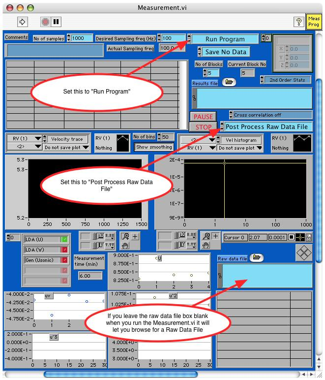
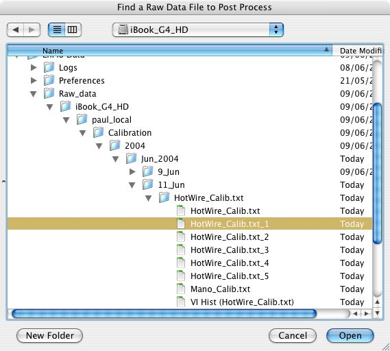

Because a Raw data file for each calibration point is created by the Calibration.vi, information about the quality (noise etc) of each calibration point can be investigated at a later date.

This is the folder structure which was automatically generated by the calibration program. The file Mano_Calib.txt is an exact copy of the Calibration file found in the users directory /Users/paul_local/Documents/LabVIEW_data/Examples/Calib_Files/HotWire_Calib.txt
The filenames HotWire_Calib.txt_1 to HotWire_Calib.txt_5 are the raw data files for the four calibration points that have been recorded for this pressure transducer calibration. They store the 600 samples measured at 100Hz (User specified) for each calibration point in binary format which can be viewed using the Measurement.vi in it post processing mode as shown below.
Go to the EnFlo_Hub.vi and click on the icon Measurement in the user tab to launch the panel shown below, or manually control the tunnel speed
Set the controls as shown above and Click on the Run Arrow to run Measurement.vi

Select the Raw Data file to Post Process

The Measurement.vi now shows the velocity trace from the pitot-static tube and the voltage trace from the hot wire anemometer that was recorded for the first calibration point (HotWire_Calib.txt_1)
To look at the next calibration point using the Measurement.vi you can either edit the raw data file box, click on the file browser icon next to the box, or delete the contents of the box before clicking on the Run arrow.

The Measurement.vi now shows the velocity trace from the pitot-static tube and the voltage trace from the hot wire anemometer that was recorded for the second calibration point (HotWire_Calib.txt_2)
All the following calibration points can be accessed in the same way.